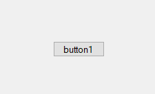

Quiz
Fonksiyonların yapısı nasıldır?
static geriDönüşTürü fonksiyonİsmi(parametreler) { Kodlar }
erişimBelirteci static fonksiyonİsmi(parametreler) { Kodlar }
erişimBelirteci static geriDönüşTürü fonksiyonİsmi(parametreler) { Kodlar }
erişimBelirteci geriDönüşTürü fonksiyonİsmi() { Kodlar }
namespace SMCS
{
internal class Program
{
public static void yazdir(string yazi)
{
Console.WriteLine(yazi);
}
public static void Main(string[] args)
{
yazdir("Hello World");
}
}
}
Kodun çıktısı ne olur?
"Hello World"
Helo Word
World Hello
Hello World
Sınıfların amacı nedir?
Sınıflar, verileri ve fonksiyonları gruplandırmamızı sağlar.
Projemize paket dahil etmemizi sağlar.
OOP’nin en önemli prensibidir.
Tırnaklar içinde ifade yazmamızı sağlar.
public static void Main(string[] args)
{
Console.Write(selamVer());
Console.WriteLine(selamVer("Data"));
}
public static string selamVer()
{
return "Selam ";
}
public static string selamVer(string name)
{
return "Selam, "+name;
}
Yukarıdaki kodun çıktısı ne olur?
Selam, DataSelam
Selam Selam, Data
Data
Selam
File C# programlama dilinde / oluşturmamızı sağlayan sınıftır.
StreamWriter True ile açılırsa dosyalara veri / yazar.
BinaryReader, / okuyarak dosyalarımızı düşük seviyede işler.
Eğitimde biz MariaDB ve HeidiSQL kullandık
C#’ta MySqlConnection, bağlantı için sunucunun değerlerini içeren bir string veri türü ister.
Özellikler penceresi, bileşenlerimizin özelliklerine (örneğin Text, Size, Location) erişebileceğimiz penceredir.
BackColor, bileşenin arka plan rengini değiştirir.
Visible, bileşenin görünürlüğünü açıp kapatan bir özelliktir.
Location, Point sınıfını kullanır

Yukarıdaki bileşenin adı CheckBox’tır.
ProgressBar’ın dolum değerine Value özelliği ile erişiriz.